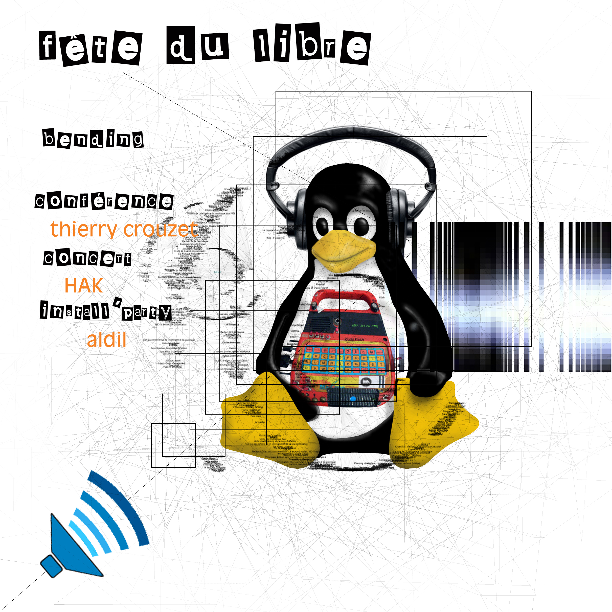

Villeurbanne, Villeneuve-d'Ascq, Marseille
Trois conférences prévues en mars sur des sujets différents. Le 5, à 18h30, je serai à la Maison du livre de L’image et du Son de Villeurbanne pour discuter d’Internet et de la liberté. Le 17, à 9h45, je serai à Villeneuve-d'Ascq, université Lille 3, à l'invitation des étudiants du master GIDE de l'UFR IDIST, pour parler du nomadisme. Enfin, le 30, je serai à Marseille pour parler politique 2.0.

Suite | 2011 | Sommaire | Texte publié dimanche 20 février 2011